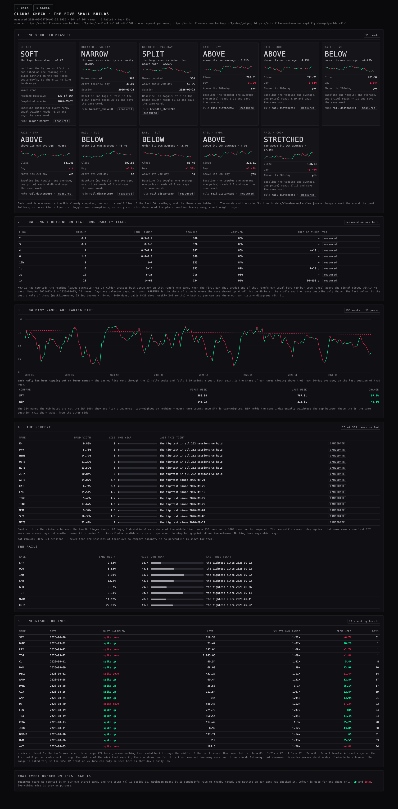
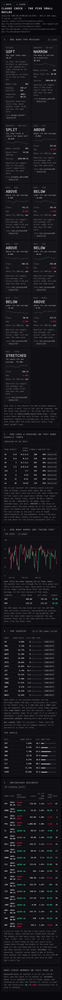

Built 24 September 2026 on branch hub/claude-check-builds-20260924. Nothing is deployed and nothing was pushed. The live page is builds.html, beside this one.
The short version. Five ideas from the Claude Check deep pass are now running on our own stored bars — all 364 names, measured in 33 seconds, none failed. Two of them answer a question Alan has asked directly. Participation: since 2023 each rally has topped out on fewer of our names, by about two points a year, and today only 36.8% of them are above their own 50-day average — a thin rally, measured, not felt. Waiting time: the post's rule of thumb is too slow for the fast rungs and too vague for the slow ones; counted on our own history, a two-hour reading takes about a day and a weekly reading about four weeks.
Eleven cards, one for each measure the Hub already computes: Geiger, both breadth counts, and the eight instruments on the macro rail (SPY, QQQ, IWM, SMH, GLD, TLT, NVDA, COIN). Each card is one large word, a small line of the last 60 readings, and the three rows behind it.
Where the numbers come from: Geiger from the chart API's own published artifact (completed session 2026-09-23); breadth from the daily bars of all 364 names; each rail from its own daily bars. The words live in a file, not in code — data/claude-check-rules.json. Change a word or a cut-off there and the card follows.
Alan's toggles. Every card also shows what the plain baseline says — every rung, equal weight — beside what the saved Equalizer says. Today they agree everywhere: the saved reading is −0.267 and the baseline −0.278 across a 60-name sample, so the word is SOFT either way. The rungs Alan has turned up are not, at the moment, changing the verdict. The biggest single disagreement in that sample is BKR, at 0.10 on a −1 to +1 scale.
What could be wrong: the cut-offs are my first proposal from the deep pass, not a calibration — nobody has checked that "70% above the 50-day" is the right place to start saying BROAD. The Geiger card has no small line, because the artifact is published one reading at a time and nothing on the Hub keeps yesterday's; the card says so instead of drawing something. The baseline comparison is a 60-name sample, not all 364, to keep the pass short.
Eight rows, one per rung in Alan's saved Equalizer, each with the middle wait, the usual range, how many signals it was counted on, and how often the move turned up at all.
| RUNG | MIDDLE | USUAL RANGE | SIGNALS | ARRIVED | THE POST SAID |
|---|---|---|---|---|---|
| 2h | 0.9 d | 0.2–2.9 | 380 | 86% | — |
| 3h | 0.9 d | 0.2–3.0 | 370 | 85% | — |
| 4h | 1.0 d | 0.7–3.2 | 387 | 85% | 4–10 d |
| 6h | 1.5 d | 0.8–3.8 | 389 | 85% | — |
| 12h | 3 d | 1–7 | 325 | 84% | — |
| 1d | 6 d | 3–15 | 355 | 89% | 8–20 d |
| 3d | 12 d | 6–21 | 216 | 93% | — |
| 1w | 28 d | 14–63 | 134 | 91% | 60–150 d |
These are measured, not quoted. The brief said measuring them is better than repeating the post, so they are counted on our own bars: a signal is the reading leaving oversold (RSI 14, Wilder, crossing back above 30) on that rung's own bars; the wait is how many calendar days until the first bar that traded one of that rung's own usual bars above the signal close, within 40 bars. Sample: 24 names, 2021-12-10 to 2026-09-23.
Why the move is not a fixed percentage. My first attempt asked for a 3% move on every rung, and it made a weekly reading look as fast as a two-hour one, because 3% is an afternoon's work on a two-hour chart and a fortnight's on a weekly one. Scaling the move to each rung's own usual bar is the same rule the scintilla detectors already use, and the ladder that comes out is orderly: 0.9 days, then 1, 1.5, 3, 6, 12, 28.
What could be wrong: one signal definition (oversold exit) stands in for "a signal" — a different trigger would give different waits, and the page says so. Only the upside is measured, so this describes a reading that worked, not one that failed. 24 names is a sample, not the universe. The rule-of-thumb column is kept beside ours so the disagreement is visible rather than buried.
195 weekly readings from January 2023 to this week: the share of our names closing above their own 50-day average, one reading per week, with a dashed line drawn through the 12 rally peaks.
What it says: the peaks line falls 2.19 points a year — each rally since 2023 has topped out on fewer names than the one before. This week's reading is 36.8%. Beside it, the same question from the other side: since the first week of 2023, SPY is up 97.8% and RSP — the same index held equally — is up 45.5%.
Where the numbers come from: the daily bars of all 364 names, one request each. A name is only counted on a date once it has 50 bars of its own; a name that is short of history is left out of the count rather than treated as a "no". A week is only drawn if at least half the universe reported that session.
What could be wrong: our 364 are not the S&P 500. They are Alan's universe, every name counted once, so this is not the chart from the post and should never be labelled as it — the page says this in plain words. Names that joined the universe later pull the early part of the line around, because the count is of whoever had 50 bars then. A peak is defined as a reading higher than everything within six weeks either side; a different window would move some peaks and tilt the line.
Every name's Bollinger band width (20 days, 2 deviations) as a share of its own middle line, ranked against that same name's own last 252 sessions. 25 of 363 names sit at or under the fifth percentile and are marked candidates. The rails are listed underneath: SPY is at its 19th percentile, NVDA 28th, GLD 30th.
What could be wrong: a coiled band says the tape has gone quiet — it says nothing about which way it breaks, and the page repeats "direction unknown" rather than implying a side. One name, CBRS, has only 71 sessions of its own and is not ranked at all; it is listed as not ranked instead of being given a percentile that would mean less than it looks. A 252-session lookback means a name that has been quiet for two years can look ordinary.
Wicks far longer than the bar's own recent range that price has never traded back through. 83 standing levels, and the example the brief named is one of them: SPY, 26 June, spiked down to 716.58 and left — nothing has traded back down to 722.76 in the 61 sessions since, and it now sits 6.7% below the last close.
Where the threshold came from, honestly. I started at twice the bar's own range, which found 8 levels and missed the example in the brief: on a daily bar that 3:59 PM print is only 1.22 times SPY's own range, because an intraday spike is half-erased by the time the day closes. The threshold is now 1×, and the page publishes the count at every threshold (1× → 83, 1.25× → 42, 1.5× → 22, 2× → 8, 3× → 3) so the bar can be raised without re-measuring anything.
What could be wrong: daily bars only. The chart API serves about a day of minute bars however the range is asked for, so the 3:59 PM print itself cannot be measured from here — only the day's low that it left behind. "Traded back through" is defined as the middle of the wick; a stricter test (any touch of the level) would clear levels faster. A level is dropped after 180 sessions, so very old business is not shown.
Both taken headless, at the two widths, and looked at.

1680 wide, 3,406px tall, no sideways scroll. Eleven verdict cards read across two rows, each with its word, its small green-and-red line and its three rows; the rung table; the participation chart with the dashed peaks line falling from left to right; the squeeze tables; the standing levels with SPY's 26 June row first.

390 wide (phone), 6,228px tall, no sideways scroll. Cards drop to two per row and stay legible; tables keep their numbers and drop only the wordy columns; the participation chart shows four dates instead of eight — at eight they ran into each other, which I only saw by looking at the picture.
30 new tests (tests/claude-check-builds.test.mjs and tests/claude-check-builds-page.test.mjs), all passing: the arithmetic on hand-checkable fixtures, and the shipped page and snapshot themselves — every card carries a rule and a number, every rung is tagged measured or estimate, every standing level clears the stated threshold, and every colour on the page is a grey except up-green and down-red.
The whole suite is 763 of 769. Four fail; two are the known pair the brief names, and two more (the Indicator Lab's method registry and its page bytes) already fail on the branch point 27779d2 without any change of mine — the Lab is owner-owned and byte-identical here.